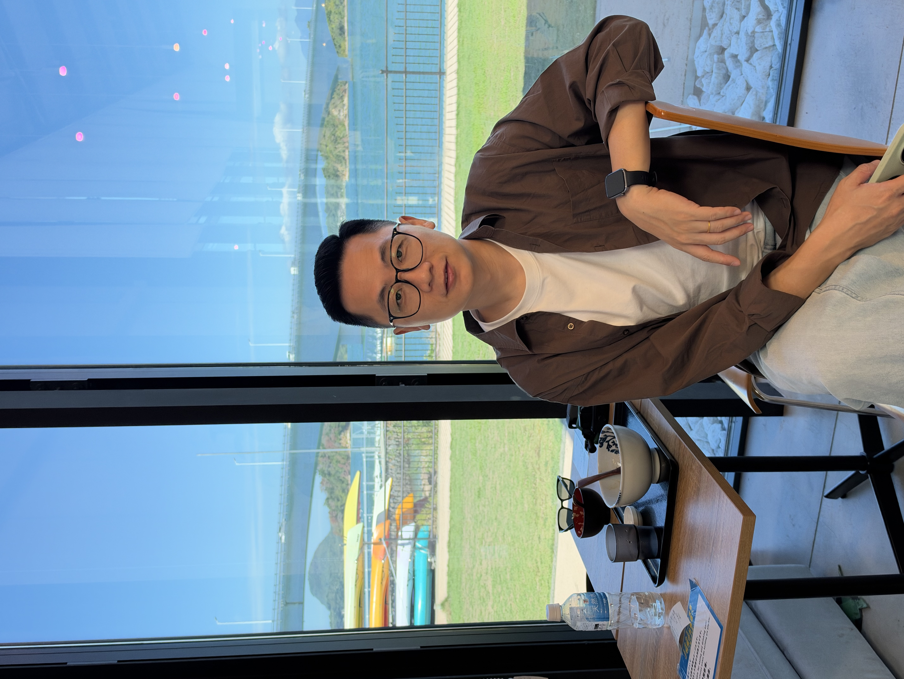
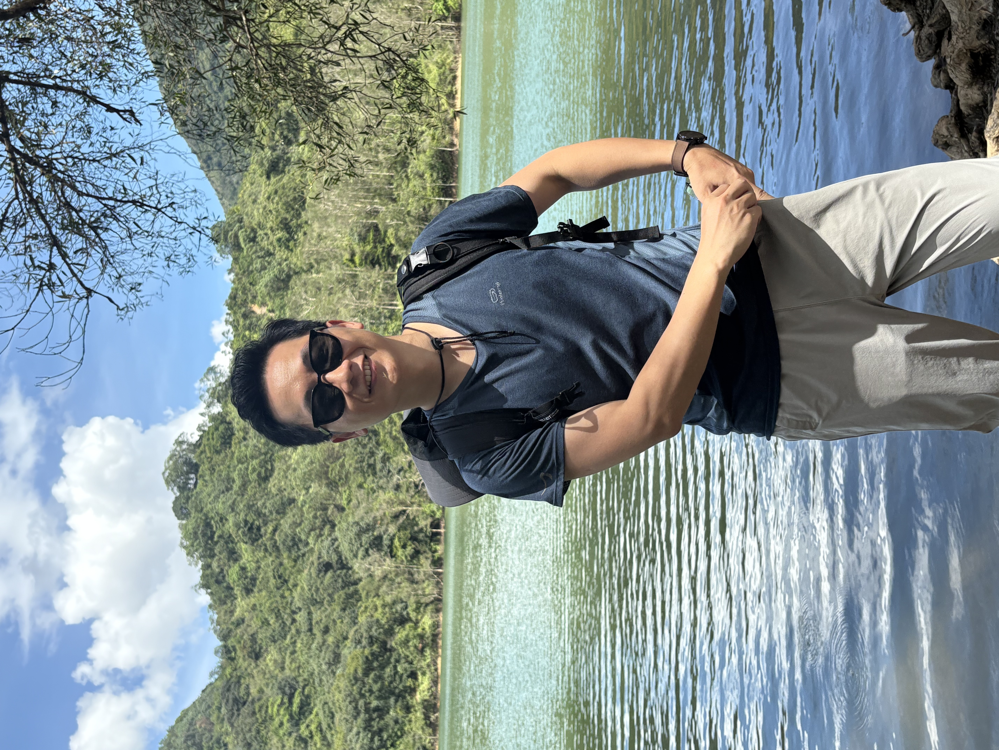
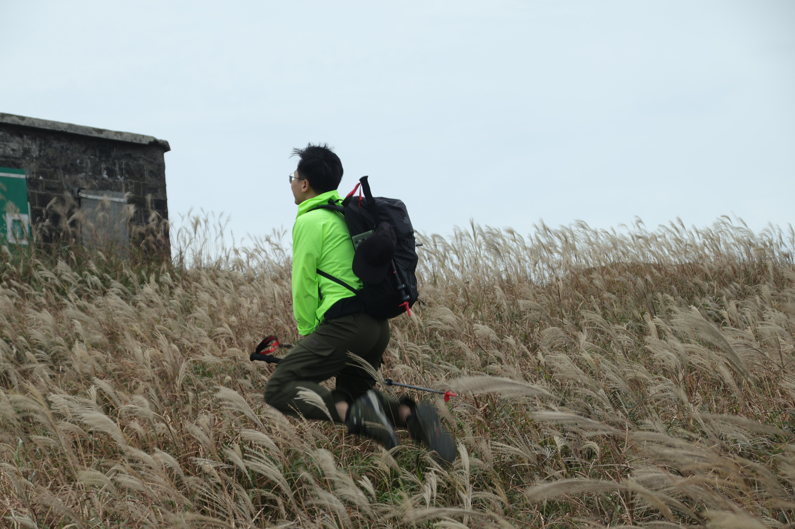
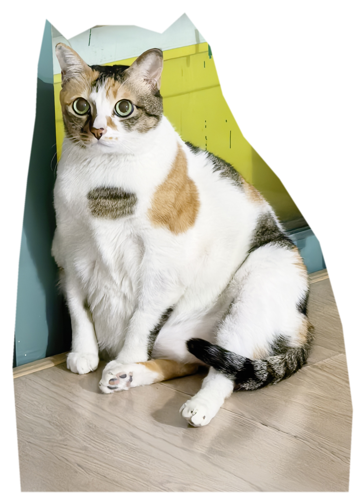
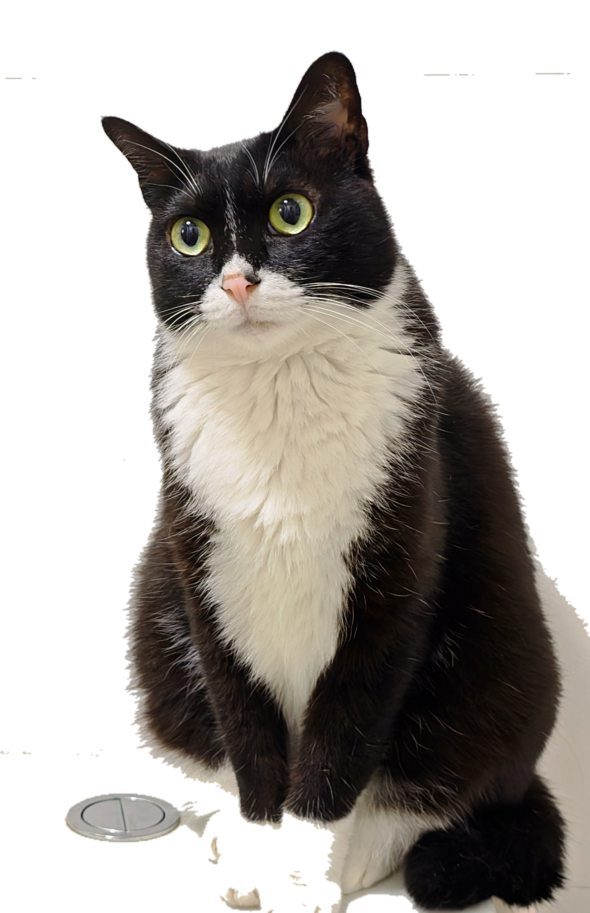
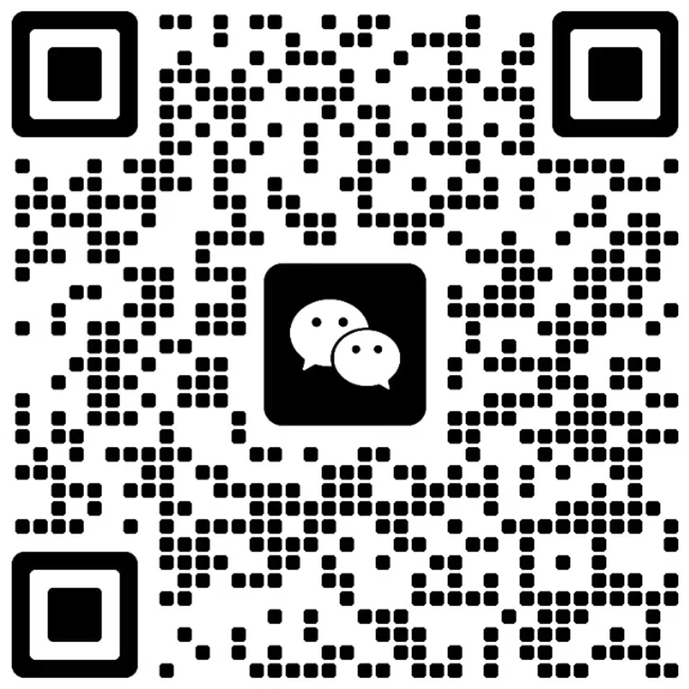

真诚而不居高临下
我不扮演无所不知的专家，会在关系里保持真实，坦诚分享必要的观察与感受。
PCA 取向 · 深圳 / 线上
我是黄家俊，一名以人为中心取向的心理咨询师。我愿意和你一起，回到正在发生的经验之中，理解那些感受、犹疑与选择，并在更真实的地方找到可以继续走下去的方向。
“耐人寻味的是：当我真正接纳自己本来的样子，改变便开始发生。”
关于我
我拥有法学与应用心理学双学士学位，完成简单心理 Uni「心理咨询师 2 年培养计划」，以人为中心取向开展个体咨询。
我曾在大型央企、民企从事人力资源管理与人才发展工作，累积十余年与人、与组织共同工作的经验。自 2022 年起，我开始系统接待心理咨询。
这段经历让我持续关注：一个人如何在家庭、关系与组织之中生活，又如何在这些角色之外，慢慢辨认出自己的感受、需要与愿望。我希望将对系统与组织中“人”的理解，和咨询室内对个体内心的倾听相融合，为你提供更立体的支持视角。
我相信，真诚的倾听与接纳，能够帮助我们触及内在的真实，活出更一致、更自在的人生。
关于我 · 视觉记录
一些来自日常生活的片段。



生活的一部分
我一直喜欢猫。它们安静、敏感，也有自己的节奏；我有时也觉得，自己身上有一点这样的气质。


我的工作方式
咨询不是把你变成某种“更好的人”，而是让你有机会在一段安全、稳定、真实的关系里，慢慢听见自己。
我不扮演无所不知的专家，会在关系里保持真实，坦诚分享必要的观察与感受。
你是自己生命经验的专家。我们一起探索，而不是由我替你决定什么才是正确答案。
有时需要慢下来，有时需要更清楚地向前走。我们在当下找到适合你的步伐。
咨询领域
如果你正经历持续的内在消耗、自我要求、角色压力、关系拉扯，或对“我到底想要什么”感到困惑，都可以从一次谈话开始。
专业同行
我所属的学习与专业共同体，持续关注以人为中心取向的实践、学习与交流。
阅读与同行
这里放我的文章，也放卡尔罗杰斯中心的最新活动信息。
预约信息
腾讯会议或微信视频
深圳福田区、宝安区
线上视频咨询
400 元 / 50 分钟线下面对面咨询
具体时段添加微信确认。
正式预约前，我们会先沟通你的基本情况与期待，确认咨询方式和时间是否合适。心理咨询不属于急诊医疗服务；如存在紧急的自伤、伤人或其他安全风险，请优先联系当地急救、医疗机构或可信赖的紧急联系人。
开始联系
添加我的个人微信，备注“咨询”，告诉我你希望了解线上还是线下咨询。我会在看到后回复你。

扫码添加微信